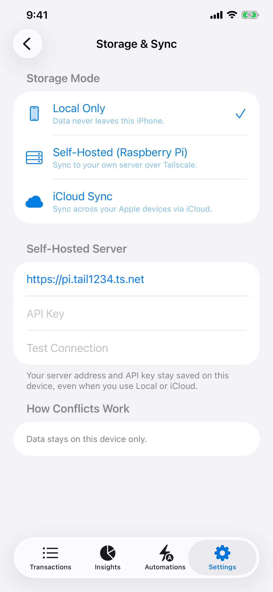
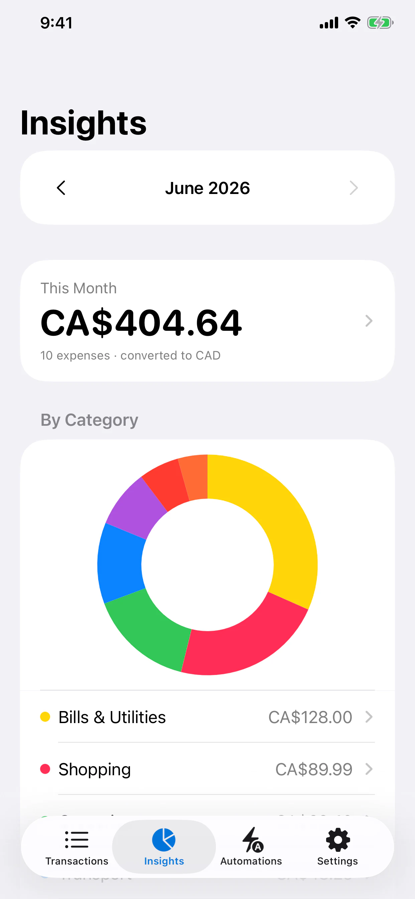
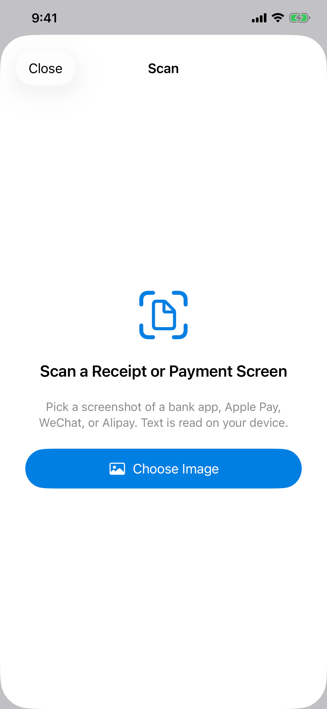

Screenshot OCR, Shortcuts, CSV, or manual entry.
Jiarong (Bill) Lu / Computer Engineering
Precision,
from the PCB up.
I build embedded control systems, compact hardware, robotics software, and practical AI products—turning complex behavior into tools people can trust.
CONTROL BUSSTM32 / C++
BOARD LAYERPCB / BLDC
RESEARCHAPPLIED AI
Flagship product / July 2026
Money tracking
that keeps its
distance.
Solo-designed and engineered for Automate Agency, PocketPilot logs spending quickly while keeping storage under the user’s control.
iOS 17+Native SwiftUI
5.5 MBApp Store size
3 modesLocal / iCloud / self-hosted



Apple Vision runs on-device; duplicate entries are flagged for review.
Choose local-only, private CloudKit sync, or a self-hosted Raspberry Pi.
Monthly totals, categories, search, multi-currency views, and widgets.
Waterloo Aerial Robotics Group / Current
Stability is
a software decision.
Embedded flight software for aerial robotics: motor-driver architecture, PID attitude management, and thrust modeling across motors and propellers.
Open flight systems case study ↗ATTITUDE LOOPPID / ACTIVE
PROPULSION MODELTHRUST / IN REVIEW
DRIVER LAYERMOTOR / INTEGRATED
Embedded control / 2025—2026
Close the loop.
Then make it
smaller.
From compact BLDC driver boards and torque rigs to production firmware across five STM32 products, I work through the full control stack.
Read the embedded control case ↗Compact STM32F446 motor-control board.
FOC and tuned PID angular control target.
Motion, motor, distance, and color-sensing firmware.
Visual tooling to replace repetitive G-code work.
Automate Agency / Current
AI that moves
through a real
workflow.
I investigate where AI earns a place in production—connecting generation, human review, scheduling, publishing, and logs into systems teams can actually operate.
- 01GenerateIdeas, captions, scripts, creative assets
- 02ReviewHuman approval and quality gates
- 03ScheduleCadence, assets, and publishing state
- 04ObserveDelivery logs and recurring improvement


Early physical build / 2024
Sense the water.
Build the whole
system.
A cost-conscious STM32 platform combining TDS sensing, propulsion, C/C++ firmware, CAD, and a custom physical enclosure.
Inspect the build ↗Selected systems
Five builds.
One engineering loop.
Understand the problem, instrument the system, close the loop, and make the result usable.
01Native iOS / Privacy
PocketPilot
Offline-first expense capture with on-device OCR and user-controlled storage.
View case ↗ 02Robotics / FlightWARG Flight Software
Motor drivers, attitude control, and propulsion modeling for aerial robotics.
View case ↗ 03PCB / FirmwareEmbedded Control
BLDC boards, FOC/PID control, product firmware, and calibration tooling.
View case ↗ 04AI / OperationsAutomate Agency
Production content pipelines with human gates and operational logging.
View case ↗ 05STM32 / PhysicalWater Quality Monitor
Sensing, propulsion, firmware, CAD, and fabrication in one compact platform.
View case ↗
Waterloo / Ontario
Engineering across
the boundary.
I’m pursuing a BASc in Computer Engineering at the University of Waterloo, expected June 2029. My best work happens where firmware, hardware, software, and product judgment meet.
STM32 / C / C++PCB / KiCad / AltiumSwift / SwiftUIPython / TypeScriptCAD / CNCAI automation
More about my approach ↗
AVAILABLE FOR ENGINEERING OPPORTUNITIES